| 日付 | 2026年5月3日（日） - 2026年5月6日（水） | ||||
|---|---|---|---|---|---|
| 山域 | 飛騨の山 | ||||
| メンバー | 家族（妻） | ||||
| 山行形態 | 3泊4日キャンプ | ||||
| アクセス | 車 | ||||
| ルート |
|
下の子が中学生になり、今年のGWから大人のみの旅行となる。
土曜は学校があるので、行けるのは5/3～5/6の4日間。
4日だとあまり遠出するのも難しく、岐阜旅行に行くことにする。
メインの目的地は前々から登ってみたかった小秀山だ。
1日目
駒ヶ岳サービスエリアで休憩。
中央アルプスが見えているが、残念ながらここから木曽駒ヶ岳は見えない。
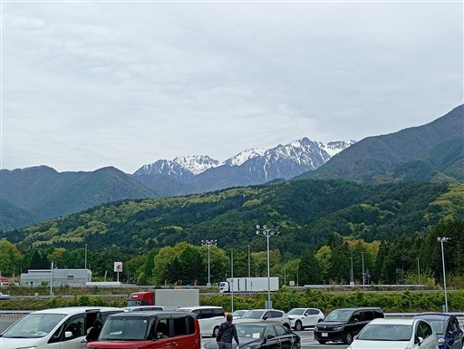
こちらは南アルプス方面。仙丈ヶ岳だろうか。
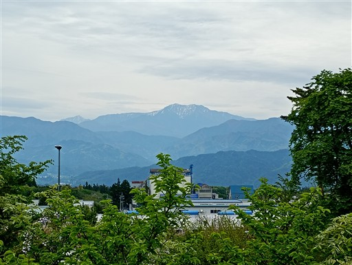
初日は下呂温泉を訪問。混雑で苦労して有料駐車場に車を停めたが、
少し離れた場所に無料で停められそうな場所もあった。
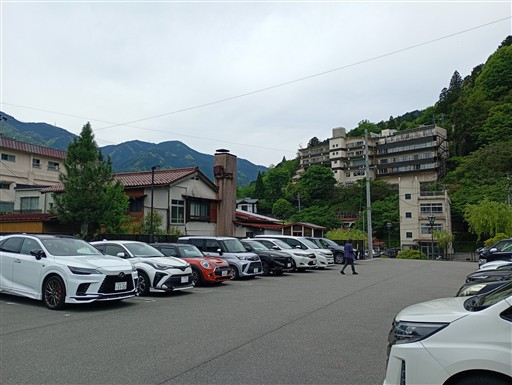
下呂温泉の町並み。ゴールデンウィークでかなりの人出だ。
驚いたことに若者がものすごく多い。
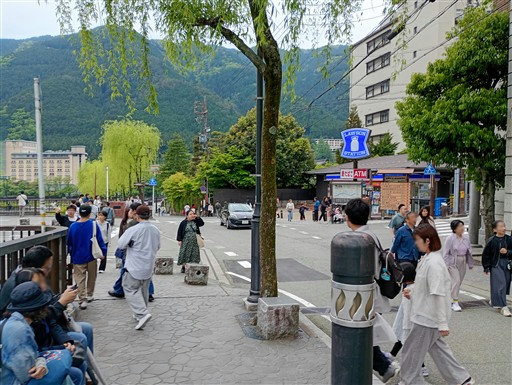
写真スポット。
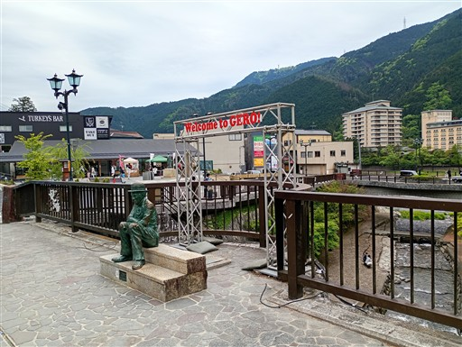
眼下を流れる飛騨川。
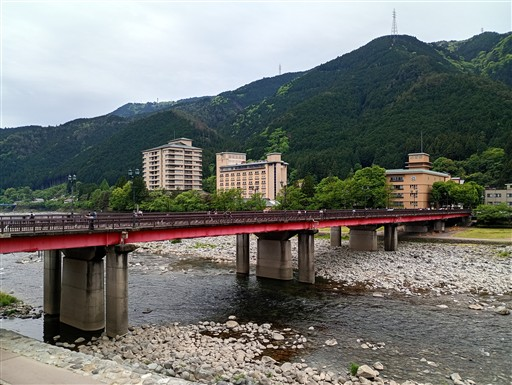
まずは温泉に行ってみる。日帰り施設の「クアガーデン露天風呂」。
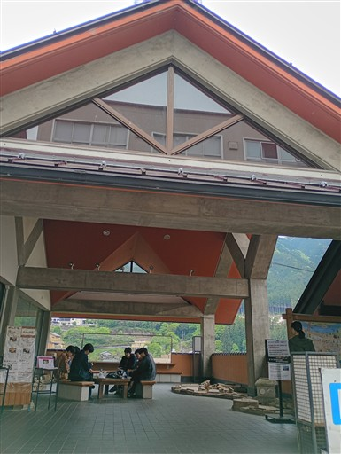
温泉施設内にあったポスター。
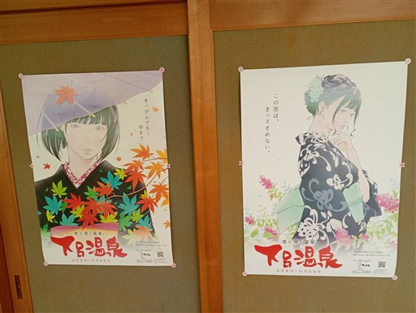
川岸に下りて少し歩く。店がない場所は人影がまばらだ。
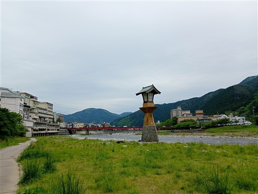
支流に入って行く。
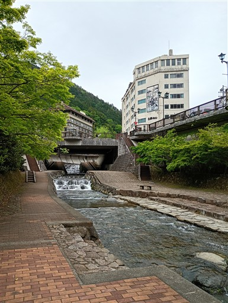
カエルはあちらこちらで見かける。ゲロの名前とかけているのだろう。
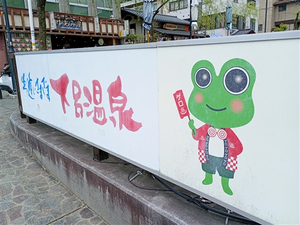
湯島庵で飛騨牛握りを食べる。長蛇の列ができていてかなり待たされる。
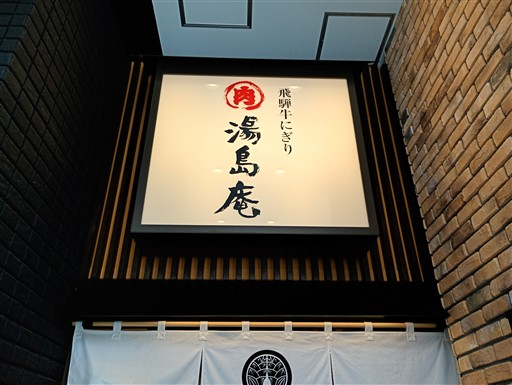
それだけだと足りないので、隣のカレーパン屋でカレーパンを買って食べる。
イートインスペースは射的場になっている。
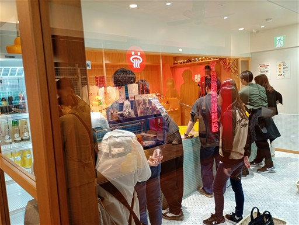
下呂温泉のマーク。なるほど、よく考えられている。
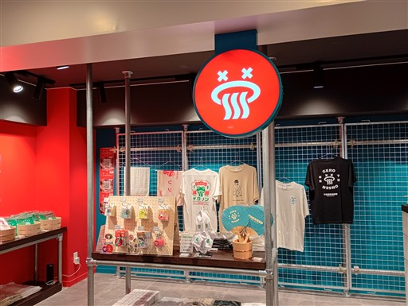
酒店で本日キャンプで飲むビールを購入。
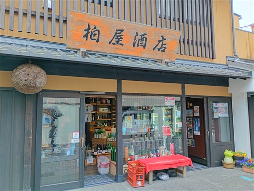
宮島キャンプ場に到着。
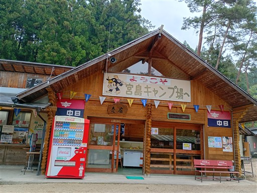
テントサイトは吊り橋を渡った先にある。
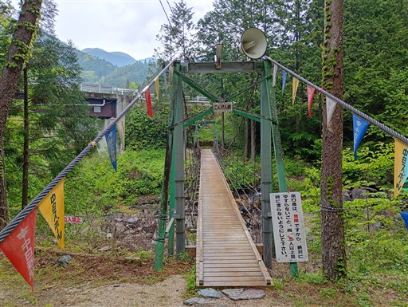
眼下の川の流れ。
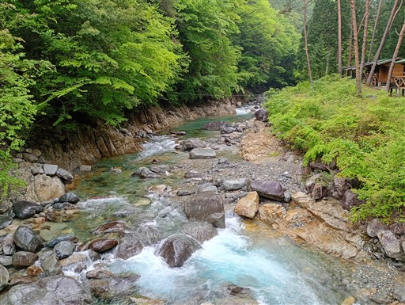
十以上のテントサイトと、複数のコテージがあるが、案外空いている。
夜はものすごく寒かった。
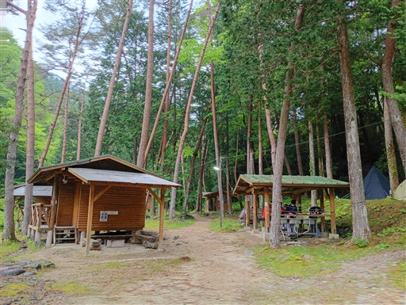